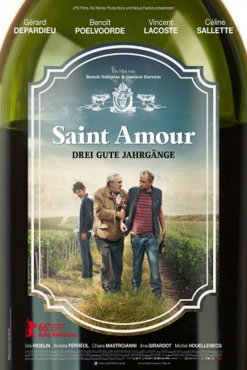
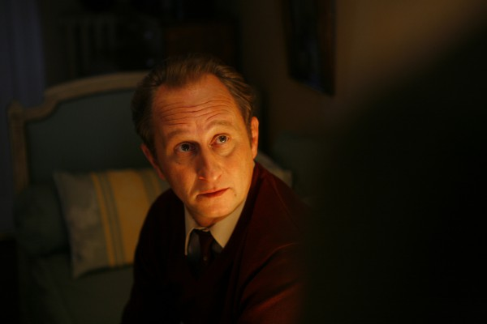

#5646 Saint Amour - Drei gute Jahrgänge
 gesehen am 20.03.2017
gesehen am 20.03.2017
 
 IMDB-Wertung: 6.2 / 10
IMDB-Wertung: 6.2 / 10  Metascore: 0
Metascore: 0 
So kann es nicht weitergehen! Seit Langem redet Bruno kaum noch mit seinem Vater Jean. Wie jedes Jahr fahren sie zur Pariser Landwirtschaftsmesse, bei der Bruno traditionell seine „Weinreise“ unternimmt, während Jean hofft, mit seinem Zuchtbullen Preise zu gewinnen. Doch diesmal soll alles anders zu werden. Eine echte Weinreise muss her! Obwohl man die beiden eher voreinander schützen müsste, sitzen sie kurzentschlossen gemeinsam im Taxi des jungen Mike und fahren schnurstracks nach Saint Amour, dem malerischen Weinort im Beaujolais. Eine Gegend der Weinberge und kleinen Restaurants, in der alles möglich scheint. Vielleicht ja auch, dass Jean und Brunos Differenzen sich auflösen, und sie wieder zueinander finden.
Jahr: 2016
Dauer: 102 Minuten
FSK: 12
Land: Frankreich Studio: Concorde FilmverleihTonspuren:
Untertitel: Deutsch,
Auflösung: 1080p (1920x1040) Größe: 6696 MB
Genre: Komödie
Regisseur: Benoît Delépine, Gustave Kervern
Drehbuch: Attila Gigor
Soundtrack:
Darsteller:
 Gérard Depardieu als Jean
Gérard Depardieu als Jean-  Benoît Poelvoorde als Bruno
 Vincent Lacoste als Mike
Vincent Lacoste als Mike Céline Sallette als Venus
Céline Sallette als Venus- Gustave Kervern als L'oncle
 Andréa Ferréol als La femme du petit-déjeuner
Andréa Ferréol als La femme du petit-déjeuner- Chiara Mastroianni als La patronne de la baraque à frites
- Izïa Higelin als L'ex de Bruno
- Ana Girardot als La jumelle
- Michel Houellebecq als Le propriétaire de la maison d'hôtes
- Pascal Merle als L'éleveur de taureaux
- Frédéric Felder als Le gars stand Bourgogne
- Blutch als Le gars stand Alsace
- Stéphanie Pillonca als La dame en famille
- Raymond Defossé als Follin
- Xavier Mathieu als Didier
- Marthe Guérin Caufman als Marie de Picardie
- Solène Rigot als Jennifer, la serveuse du restaurant
- Mahault Mollaret als La future mariée
- Lydie Ledoeuff als Copine de la future mariée
- Charlotte Mas als Copine de la future mariée
- Marine Pages als Copine de la future mariée
- Juliette Seydoux als Copine de la future mariée
- Jean-Louis Jacob als Le prophète
- Ovidie als La fille de l'agence immobilière
- Isabelle Delépine als La patronne de l'agence immobilière
- Madphil als Pipoune, le futur marié
- Cécile Jullien als Serveuse hôtel
- Clément Perrodin als Speaker salon
- Jimmy Ressiot als Employé ferme
Datei: X:\2016(N-Z)\Saint Amour - Drei gute Jahrgänge (2016, FSK12, 1920x1040).mkv seit 02.03.2017
Festplatte: HD 2016(A-Z)
 Es gibt insgesamt 182 Filme in der Gruppe '2016(N-Z)'
Es gibt insgesamt 182 Filme in der Gruppe '2016(N-Z)'